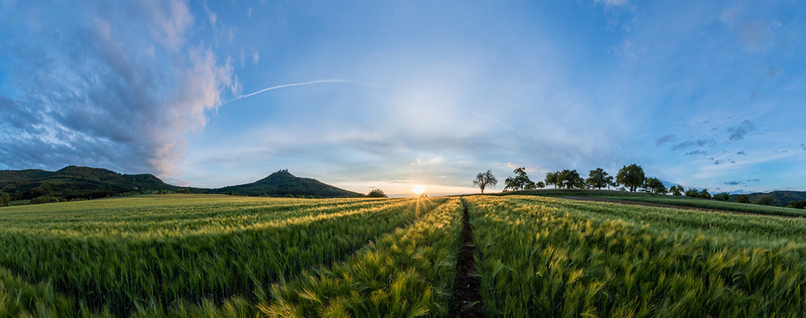

Introducing the "AgriConnect" Model: A Comprehensive Approach towards Website Development for the Agriculture Sector
The AgriConnect model is a distinctive and comprehensive website development strategy created specially to address the wide range of needs of the agricultural sector. It combines a number of features and functions to support collaboration, empower farmers, and promote sustainable agriculture practices. By giving farmers, agricultural professionals, and stakeholders access to a complete online platform, this strategy seeks to close the digital divide in the farming community. The AgriConnect model envisions a farming community that is digitally interconnected, promoting cooperation, knowledge sharing, and market access. This strategy gives farmers the tools they need to embrace innovation, boost productivity, and achieve sustainable growth in the agriculture industry by utilizing the power of website development and technology.
